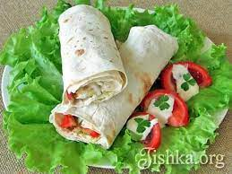

Замовлення
Классична Шаурма
85₴
1.Маринуємо м'ясо в спеціях, даємо трохи настоятися, а потім обсмажуємо вибраним способом. 2.Готуємо соус. Для цього до сметани додаємо часник, продавлений через прес, порізану петрушку, перець, сіль. Добре перемішуємо. 3.Нарізаємо на невеликі скибочки обсмажене м'ясо курки. 4.Нарізаємо помідор із огірком. 5.Шинкуємо капусту. 6.Якщо великий лаваш, розрізаємо його на шматки потрібного розміру. 7.Промазуємо його соусом. Мажемо тільки там, де буде начинка. 8.Викладаємо начинку. 9.Загортаємо лаваш із начинкою в рулет. 10.Підрум'янюємо на побутовому грилі.
Шаурма з ковбасою
100₴
1.Ковбасу кубиками або соломкою обсмажуємо на сковороді. І варена і копчена ковбаса в лаваші так буде смачнішою. 2.Нарізаємо овочі (помідори, огірки, капусту). 3.Рубаємо зелень (листовий салат, петрушку). 4.Натираємо твердий сир на великій тертці. 5.Викладаємо начинку, поливаємо кетчупом та майонезом. Загортаємо в рулет. 6.Обсмажуємо лаваш до золотистої скоринки на сковороді (без олії).

Шаурма з яловичиною
115₴
1.Спочатку ріжемо м'ясо невеликими скибочками і обсмажуємо на сковороді з цибулею. Під час смаження додаємо по одній столовій ложці соєвого соусу та лимонного соку, а також чайну ложку цукру. 2.Готуємо соус. Для цього змішуємо кетчуп з майонезом, додаємо тиск часник і спеції. 3.Тонко шаткуємо капусту, додаємо сіль. 4.Нарізаємо помідор маленькими шматочками, огірки, солодкий та гострий перець соломкою. 5.Беремо тонкий лаваш та намазуємо на нього соус тонким шаром. 6.Викладаємо яловичину та овочеву начинку. 7.Скручуємо рулет та обсмажуємо блюдо на сухій сковороді.
Шаурма з креветками
140₴
1.Отварюємо креветки. У воду додаємо сіль. 2.Нарізаємо огірки, помідори. 3.Рвем листовий салат. 4.Змішуємо кетчуп з майонезом, додаємо чорний перець та спеції. Щоб вийшов корисніший варіант шаурми, замість кетчупу з майонезом можна зробити соус зі сметани. 5. Змащуємо лаваш, викладаємо начинку, загортаємо, підсмажуємо.

Варіант для вегетаринців
130₴
1. Беремо сметану і додаємо в неї кетчуп, спеції. При необхідності солимо. Любителі часникового смаку можуть додати часник. 2.Нарізаємо соломкою помідор та огірок. 3.Нарізаємо пекінську капусту або листя салату. 4.Змащуємо лаваш. 5.Викладаємо на нього начинку. 6.Додаємо тертий твердий або адигейський сир. 7.Також легка шаурма може готуватися з консервованою кукурудзою та грибами (це на любителя). 8.Згортаємо лаваш з начинкою в рулет. 9.Підсмажуємо на сковороді до хрусткої скоринки.